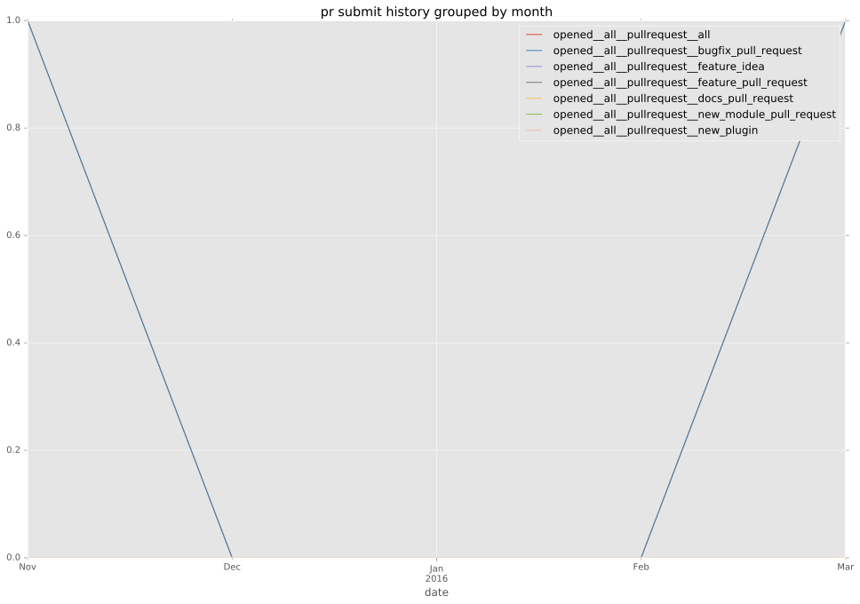
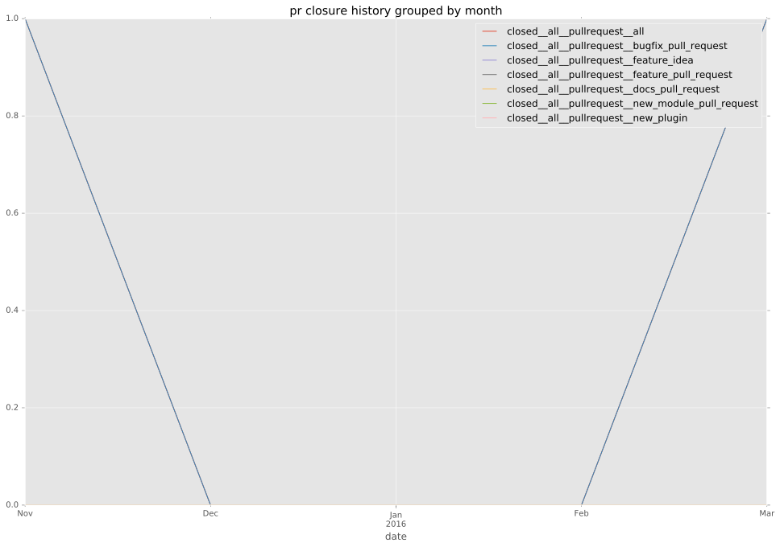

authors
- emonty
maintainers
- emonty
- shrews
- juliakreger
- j2sol
- rcarrillocruz
contributors
- emonty : 35 commits
- Shrews : 7 commits
- bcoca : 2 commits
- rcarrillocruz : 1 commits
total issue counts
bugfix pull request: 3
feature idea: 1
pullrequest: 3
issue: 5
bug report: 4
issue history
pullrequest history


days open by issue type
all
count: 10
std: 99.2174379835
min: 0
max: 315
median: 0.0
mean: 32.9
pullrequest
count: 0
std: nan
min: nan
max: nan
median: nan
mean: nan
bugfix pull request
count: 6
std: 0.0
min: 0
max: 0
median: 0.0
mean: 0.0
feature idea
count: 0
std: nan
min: nan
max: nan
median: nan
mean: nan
issue
count: 0
std: nan
min: nan
max: nan
median: nan
mean: nan
bug report
count: 4
std: 155.306954126
min: 0
max: 315
median: 7.0
mean: 82.25
closures grouped by total days open